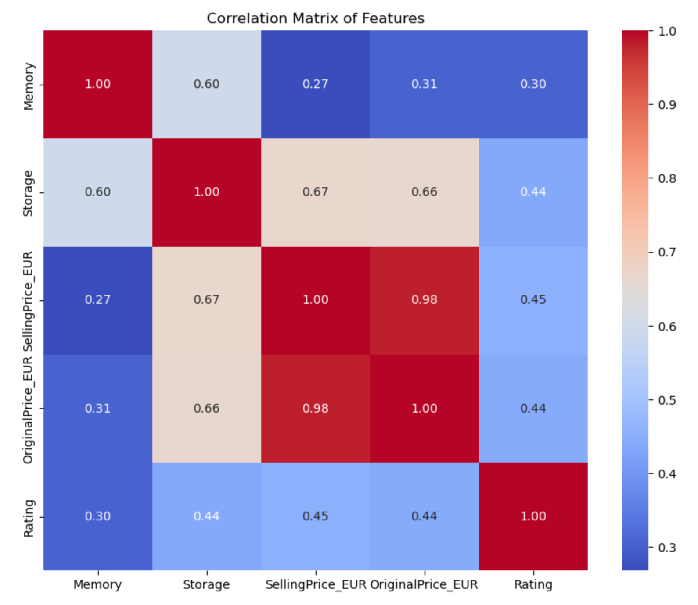

Phone Sales Performance Analysis In India
Project Overview:
This project involved performing a comprehensive analysis of phone sales in India, leveraging data cleaning techniques, Python analysis, and Power BI visualisations to gain dynamic insights into sales trends, consumer preferences, and revenue.
Technologies Used:
- Python for data processing and analysis
- Power BI for data visualization
- Machine Learning models for predictive analysis
Data Quality and Processing
The integration of Power BI visualisations with the "Sales.csv" dataset and Python analysis enriches the analysis by offering dynamic insights. The visualisations provide a multi-dimensional view of market dynamics, underscoring the importance of visual analytics in deriving actionable business intelligence.
Data processing and feature engineering, such as standardising formats and handling missing values, directly impact model performance. These steps ensure the dataset is clean, uniform, and ready for analysis, crucial for building accurate and reliable predictive models.
Data Cleaning and Preparation
I utilised Python to clean and prepare the dataset for analysis. This involved standardising memory and storage columns, handling missing values, calculating discount percentages, converting currencies, and more. The objective was to ensure high data quality and consistency.
What I did to clean the Sales Data...
Dataset Initialisation: Sales data was imported into a pandas DataFrame from a CSV file.
Data Cleanup: Column headers were standardised by removing spaces and rows with missing values to maintain dataset integrity.
Data Standardisation: Memory and storage information were normalised to a uniform numeric format enabling accurate quantitative comparisons.
Feature Engineering: Additional calculations were performed to derive new columns, such as discount percentages, improving the dataset's utility for analysis.
Currency Standardisation: Prices were converted from INR to EUR for consistency, and ensuring the data aligns with the analysis's geographic focus.
Data Pruning: Columns containing original currency values were removed post-conversion to include only relevant data.
Data Export: The refined dataset was exported as a new CSV file.
Analytics: Statistical Analysis and Machine Learning
The heatmap displays the correlation matrix for selected features, providing insights into the relationships between memory, storage, pricing, and ratings. This analysis identifies key influencers on product ratings and guides strategic decisions.
Click here to see the code:Project Notebook
Key observations from the correlation matrix:
Memory and Rating: The correlation is relatively low, suggesting that the amount of memory in a device does not strongly influence its rating.
Storage and Rating: Similar to memory, the storage capacity shows a low correlation with ratings, indicating it might not be a significant factor in how users rate the devices.
SellingPrice_EUR and OriginalPrice_EUR: As expected, there is a very high correlation between selling price and original price, which is logical given that these two attributes are closely related.
Price and Rating: Both 'SellingPrice_EUR' and 'OriginalPrice_EUR' show low to moderate correlation with 'Rating', suggesting that while there may be some relationship between price and quality perception, it is not strongly linear.
Analysis and Insights
The analysis revealed several key insights into the phone sales market in India. Through correlation matrices and machine learning models, we identified which factors most strongly influenced customer satisfaction and sales performance.
Project Outcomes
The project significantly contributed to understanding the dynamics of the Indian phone market. It informed strategic decisions for our client, helping them to tailor their inventory and marketing efforts more effectively.
Machine learning models, including Linear Regression and Gradient Boosting, have been employed to predict mobile phone ratings based on specifications and prices. The models' performance, indicated by RMSE and R^2 Score, reveals the predictive power and areas for further improvement.
What I did in the Python Code:
from sklearn.ensemble import GradientBoostingRegressor
# Initializing and training the Gradient Boosting model
gb_model = GradientBoostingRegressor(random_state=42)
gb_model.fit(X_train, y_train)
# Predicting the ratings for the test set using Gradient Boosting
y_pred_gb = gb_model.predict(X_test)
# Evaluating the Gradient Boosting model
mse_gb = mean_squared_error(y_test, y_pred_gb)
rmse_gb = np.sqrt(mse_gb)
r2_gb = r2_score(y_test, y_pred_gb)
rmse_gb, r2_gb